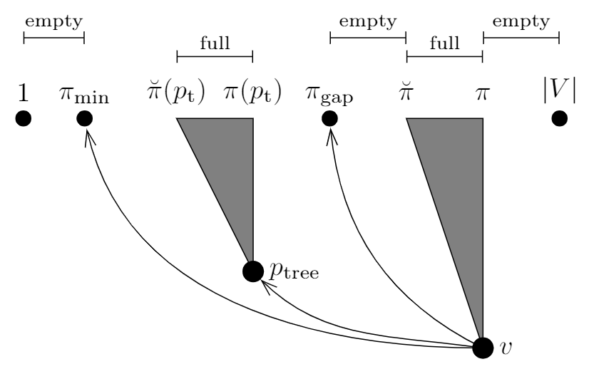
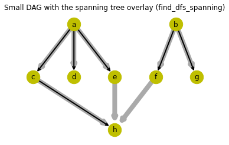

DFS Intervals Labelling
min-post intervals labeling and its extensions, as used in GRAIL, FERRARI (and PReaCH)
Imports for the module
Definitions: out-tree, spanning tree / tree cover, etc.

In graph theory, a tree is an undirected graph in which any two vertices are connected by exactly one path, or equivalently a connected acyclic undirected graph.

In graph theory, a directed rooted tree or an arborescence, or out-tree is a directed graph in which, for a vertex \(u\) called the root and any other vertex \(v\), there is exactly one directed path from \(u\) to \(v\). Equivalently, an arborescence is a directed, rooted tree in which all edges point away from the root.
Every directed rooted tree is a directed acyclic graph (DAG), but not every DAG is a tree.
Note
here root denotes a source node / verted, with in-degree of zero.
A directed rooted forest is a disjoint union of directed rooted trees. It is called branching or out-forest if all its edges point away from the root in each rooted tree.

In the mathematical field of graph theory, a spanning tree \(T\) of an undirected graph \(G\) is a subgraph that is a tree which includes all of the vertices of \(G\), with a minimum possible number of edges.
A full spanning forest in an undirected graph (possibly not connected) is a maximal acyclic subgraph of the given graph, or equivalently a graph consisting of a spanning tree in each connected component of the graph.
Given a vertex \(v\) on a directed multigraph \(G\), an oriented spanning out-tree, or tree cover \(T(G)\) rooted at \(v\) is an acyclic subgraph of \(G\) in which every vertex other than \(v\) has in-degree 1.
Given directed acyclic graph \(G\), a spanning forest, or oriented spanning out-forest is such its subgraph, for which the following is true: - it includes all original (full) graph nodes - there is at most one incoming edge per node (every vertex has in-degree 1 or 0)
min-post intervals in directed trees
The reachability problem on trees (out-forests) can be solved effectively by interval labeling, which takes linear time and space for constructing the index, and provides constant time querying.
It labels each node \(u\) with a min-post range \(I_u = [s_u, e_u]\), where - \(s_u\) denotes the rank of the node \(u\) in a post-order traversal of the tree, where the ranks are assumed to begin at 1, and all the children of a node are assumed to be ordered and fixed for that traversal.
Note that the tree needs to be traversed in depth-first search (DFS) manner.
- \(s_u\) denotes the lowest rank for any node \(x\), or in other words minimum of DFS number of a node in the subtree rooted at \(u\) (i.e., including \(u\)).
Min-post interval for a vertex (node) \(u\) in a directed acyclic graph \(G\), denoted as \(I(u) \equiv I_u = [s_u, e_u]\), can be computed in the following way: - \(e_u\) is defined as \(e_u = \pi(u) = \text{post}(u)\), i.e. post-order value (back traversal) in DFS traversal - \(s_u = \pi(u) = e_u\) for leaf nodes, also known as sink nodes (no outcoming edges, out-degree 0),
otherwise \(s_u = \min\{s_x \colon x \in \text{out-neighbours}(s)\}\) (out-neighbours are sometimes called children).
Similarly, max-pre interval for a vertex (node) \(u\) in a directed acyclic graph \(G\), denoted as \(\text{range}(u) \equiv \hat{I}_u = [\hat{\phi}(u), \phi(u)]\), can be computed in the following way: - \(\phi(u)\) is defined as \(\phi(u) = \text{pre}(u)\), i.e. pre-order value (forward traversal) in DFS traversal - \(\hat{\phi}(u) = \phi(u)\) for leaf nodes, also known as sink nodes (no outcoming edges, out-degree 0),
otherwise \(\hat{\phi}(u) = \max\{\hat{\phi}(x) \colon x \in \text{out-neighbours}(s)\}\).
Min-post interval properties for trees
For out-forests (directed forests) the containment between intervals is equivalent to the reachability relationship between the nodes, since the post-order DFS traversal enters a node before all of its descendants, and leaves after having visited all of its descendants.
In other words, \(u \leadsto v \iff I_v \subseteq I_u\)
Note
for trees it is enough to check that \(s_v \in I_u\), because that is equivalent to checking \(I_v \subseteq I_u\).
This means that the reachability query for trees can be answered in constant time.
Min-post and max-pre intervals for trees functions both as positive-cut and as negative-cut filter: - if \(I_v \subseteq I_u\), then \(u\) can reach \(v\) (positive-cut filter) - if \(u\) can reach \(v\), then \(I_v \subseteq I_u\) (negative-cut filter)
min-post intervals in directed acyclic graphs (DAGs)
The DFS post-order value (back traversal) induces topological sorting for a DAG.
This means that if \(u\) can reach \(v\) (i.e. \(r(u,v)\) is true, or \(u \leadsto v\)), and \(u \neq v\), then \(\text{post}(u) > \text{post}(v)\).
Conversely, if \(\text{post}(u) < \text{post}(v)\), then \(u\) cannot reach \(v\) (negative-cut filter).
For example, as shown in the above image, \(n_{18} \leadsto n_{9}\), but \(n_{18} \not\leadsto n_{19}\)
min-post interval for a spanning tree (positive-cut filter)
For a directed acyclic graph \(G\), we define a tree cover (or forest cover) of \(G\), denoted as \(T(G) = (V_T, E_T)\), as a directed spanning tree of \(G\).
Tip
if we want to have a tree cover rather than a forest,
we can augment graph \(G\) by introducing an artificial root node \(r\) that is connected to every node with no incoming edge: \[ G' := (V \cup \{r\}, E \cup \{(r,v) \colon v \in V, \text{indegree}(v) = 0\}) \] Note that this modification has no effect on the reachability relation among the existing nodes of \(G\).
We define min-post tree interval as following
\[ I_v = \{\pi(w) \colon w \in V_{T_v}\} = \left[ \min_{w \in V_{T_v}} \pi(w), \max_{w \in V_{T_v}} \pi(w) \right] = \left[ \min_{w \in V_{T_v}} \pi(w), \pi(v) \right]\]
Here \(T_v = (V_{T_v}, E_{T_v})\) denote the subtree of \(T(G)\) rooted at node \(v\).
The spanning forest, or tree cover, or out-forest \(T(G)\) of directed acyclic graph \(G\) has the following properties: - if there exists a path from \(u\) to \(v\) in the spanning tree \(T(G)\), then \(u\) can reach \(v\) in the full graph \(G\) - but the path from \(u\) to \(v\) could require going through edges outside the spanning tree \(T(G)\)
The min-post tree interval labels have therefore the following properties: - path from \(u\) to \(v\) in the spanning tree \(T(G)\) exists if and only if \(I_v \subseteq I_u\) (or \(\pi(v) \in I_u\)) - if \(I_v \subseteq I_u\), then \(u \leadsto v\) (\(u\) can reach \(v\), also in the full graph \(G\))
It can be therefore used as positive-cut filter.
Example:
In the graph and its spanning tree shown in the above figure we have: - \([3,3] \subseteq [1,5]\) then \(a \leadsto h\), - \([3,3] \not\subseteq [7,9]\), but \(b \leadsto h\) (via out-of-tree edge)
Such interval is called tree interval or exact interval and denoted \(I_T(u)\) in the FERRARI paper,
and the corresponding max-pre interval as a range is called full interval (because every \(v\) such that \(\phi(v) \in I_T(u)\) is reachable from \(v\)) in the PReaCH paper
min-post interval for a DAG (negative-cut filter)
While above technique (min-post intervals) can be used to easily answer reachability queries on trees, the case of general DAGs is much more challenging.
The reason is that, in general, the reachable set \(\mathcal{R}(v)\) of a vertex \(v\) in the DAG (i.e. the set of vertices reachable from \(v\): \(\mathcal{R}(v) = \{u \in V\colon v \leadsto u\}\)) is only partly represented by the interval \(I_T(v)\), as the tree interval only accounts for reachability relationships that are preserved in \(T\). Vertices that can only be reached from a node \(v\) by traversing one or more non-tree edges have to be handled seperately: instead of merely storing the tree intervals \(I_T(v)\), every node \(v\) is now assigned a set of intervals, denoted by \(\mathcal{I}(v)\). The purpose of this so-called reachable interval set is to capture the complete reachability information of a node.
Let’s define the approximate graph interval as a single interval \(\tilde{I}_G(v) = [\tilde{s}_u, \tilde{e}_u]\) approximating the reachable set \(\mathcal{R}(u)\) of a vertex \(u\) in the DAG from the above (i.e. \(\mathcal{R}(u) \subseteq \tilde{I}_G(u)\)) in the following way:
\[ \tilde{I}_G(v) = \left[ \min_{w \in \mathcal{R}(v)} \pi(w), \max_{w \in \mathcal{R}_v} \pi(w) \right] = \left[ \min_{w \in V} \pi(w), \pi(v) \right]\]
The second part of the above equation is true for DFS traversal; the fact that the end of interval is simply post-traversal value \(\pi(v)\) was mentioned earlier.
This min-post approximate graph interval has the following properties: - if \(u\) can reach \(v\) (denoted as \(u \leadsto v\)), then \(\tilde{I}_G(v) \subseteq \tilde{I}_G(u)\) - this means that if \(\tilde{I}_G(v) \not\subseteq \tilde{I}_G(u)\), then \(u\) cannot reach \(v\) (negative-cut filter)
For example, part (a) of the figure above (taken from GRAIL paper) shows the interval labeling on a tree, assuming that the children are ordered from left to right. It is easy to see that reachability can be answered by interval containment. For example, \(1 \leadsto 9\), since \(I_9 = [2, 2] \subset [1, 6] = L_1\), but \(2 \not\leadsto 7\), since \(I_7 = [1, 3] \not\subseteq [7, 9] = L_2\).
For example, part (b) of the figure above shows an interval labeling on a DAG, assuming a left to right ordering of the children. As one can see, interval containment of nodes in a DAG is not exactly equivalent to reachability. For example, \(5 \not\leadsto 4\), but \(\tilde{I}_4 = [1, 5] \subseteq [1, 8] = \tilde{I}_5\). In other words, \(\tilde{U}_v \subseteq \tilde{I}_u\) does not imply that \(u \leadsto v\). On the other hand, one can show that \(\tilde{I}_v \not\subseteq \tilde{I}_u \implies u \not\leadsto v\).
Extending min-post intervals for graphs
This section describes various extensions to the min-post intervals (DFS numbering) going beyond those negative-cut and positive-cut filters described above.
Multiple intervals labelling: GRAIL (TODO)
Extending interval labelling: PReaCH
The PReaCH paper extends min-post intervals labelling with approach slightly different from GRAIL, where instead of using additional DFS searches, additional extra labels are used.
NOTE: the PReaCH paper uses max-pre interval labelling instead of min-post one, but one can be translated into the other.
Original extension of max-pre intervals (Section 3.3 of PReaCH)
Section 3.3 “Pruning Based on DFS Numbering” in the PReaCH paper.
Let \(\phi(v)\) denote the pre-visit DFS number of node \(v\) and \(\hat{\phi}(v)\) the largest DFS number of a node in the subtree of the DFS tree rooted at \(v\). The properties of DFS ensure that the nodes in \(\text{range}(v) := \phi(v)..\hat{\phi}(v)\) are all reachable from \(v\) (they form the subtree of the DFS tree which is rooted at \(v\)) and that no nodes with DFS number exceeding \(\hat{\phi}(v)\) is reachable from \(v\).
Let \(u \to v\) denote that \(r(u,v)\) is true, and \(u \nrightarrow v\) that \(r(u,v)\) is false.
(We would use \(u \leadsto v\)/\(u \rightsquigarrow v\), but \(u \not\leadsto v\) is broken, and there is no \(\nrightsquigarrow\)).
- \(\forall v,t \in V \colon\ t \in \text{range}(v) \implies v \to t\)
(positive-cut) - \(\forall v,t \in V \colon\ \phi(t) > \hat{\phi}(v) \implies v \nrightarrow t\)
(negative-cut)
Let’s define node \(w = p_{\text{tree}}(v)\) as the node that has \(v \to w\) and \(w \notin \text{range}(v)\) which maximizes \(\lvert\text{range}(w)\rvert\). Then, if \(p_{\text{tree}}(v)\) exists
- \(\forall v,t \in V \colon\ p_{\text{tree}}(v) \neq \bot \land t \in \text{range}(p_{\text{tree}}(v)) \implies v \to t\)
(positive-cut)
For any \(v \in V\), let \(\phi_{\text{min}}(v)\) denote the smallest DFS number of a node reachable from \(v\) (including \(v\)). Then
- \(\forall v,t \in V \colon\ \phi(t) < \phi_{\text{min}}(v) \implies v \nrightarrow t\)
(negative-cut)
We can also define \(\phi_{\text{gap}}(v)\) in such way that
- \(\forall v,t \in V \colon\ \phi_{\text{gap}}(v) < \phi(t) < \phi(v) \implies v \nrightarrow t\)
(negative-cut)
All those values: \(\phi(v), \hat{\phi}(v), p_{\text{tree}}(v), \phi_{\text{min}}(v), \phi_{\text{gap}}(v)\) can be done while computing the DFS numbering.
On choosing the DFS spanning-tree from PReaCH paper
There are many ways to define a DFS ordering: We are free to choose the order in which we scan the nodes for starting recursive exploration and we can choose the order in which we inspect edges leaving a node being explored.
One heuristics that seems to be useful: Make sure that most nodes are in a small number of trees because this leads to large positive intervals. It therefore makes sense to only uses sources of the graph as tree roots.
In addition, one can order the sources by the number of nodes reached from them during the search for topological levels.
Translating PReaCH extension to min-post intervals

Let \(\pi(v)\) denote the post-visit DFS number of node \(v\) and \(\breve{\pi}(v)\) the smallest post-visit DFS number of a node in the subtree of the DFS tree rooted at \(v\). The properties of DFS ensure that the nodes in \(I_T(v) := \breve{\pi}(v)..\pi(v) = [\breve{\pi}(v),\pi(v)]\) are all reachable from \(v\) (they form the subtree of the DFS tree which is rooted at \(v\)) and that no nodes with DFS number exceeding \(\pi(v)\) is reachable from \(v\).
Let \(u \to v\) denote that \(r(u,v)\) is true, and \(u \nrightarrow v\) that \(r(u,v)\) is false.
- \(\forall v,t \in V \colon\ t \in I_T(v) \implies v \to t\)
(positive-cut) - \(\forall v,t \in V \colon\ \pi(t) > \pi(v) \implies v \nrightarrow t\)
(negative-cut)
Let’s define node \(w = p_{\text{tree}}(v) = p_{\text{t}}(v)\) as the node that has \(v \to w\) and \(w \notin I_T(v)\) which maximizes \(\lvert I_T(w)\rvert\).
Then, if \(p_{\text{tree}}(v)\) exists (which we denote as \(p_{\text{tree}}(v) \neq \bot\))
- \(\forall v,t \in V \colon\ p_{\text{tree}}(v) \neq \bot \land t \in I_T(p_{\text{tree}}(v)) \implies v \to t\)
(positive-cut)
For any \(v \in V\), let \(\pi_{\text{min}}(v)\) denote the smallest post-visit DFS number of a node reachable from \(v\) (including \(v\)) in the graph.
Note
with this notation we can say that \(\tilde{I}_G(v) = [\pi_{\text{min}}(v), \pi(v)]\).
Then
- \(\forall v,t \in V \colon\ \pi(t) < \pi_{\text{min}}(v) \implies v \nrightarrow t\)
(negative-cut)
We can also define \(\pi_{\text{gap}}(v)\) in such way that
- \(\forall v,t \in V \colon\ \pi_{\text{gap}}(v) < \pi(t) < \pi(v) \implies v \nrightarrow t\)
(negative-cut)
All those values: \(\pi(v), \breve{\pi}(v), p_{\text{tree}}(v), \pi_{\text{min}}(v), \pi_{\text{gap}}(v)\) can be done while computing the DFS numbering.
Extending interval labelling: FERRARI (TODO)
Visualizing DFS intervals on example graphs
TODO
# this is needed for example (small) graphs
import git_commit_graph_ext.example_graphs as graphs# this is needed only for demonstrations
import matplotlib.pyplot as pltExamples of spanning trees and min-post tree intervals labelling
Draw a small DAG (from FELINE paper) and its spanning tree, like on Figure 8 of the FELINE paper, together with its min-post tree intervals.
#@title Draw a small DAG and its spanning-tree, as in Figure 8
from copy import deepcopy
plt.axis('off')
plt.title('Small DAG with the spanning tree overlay and min-post intervals')
sd=graphs.small_DAG_FELINE()
sd.tree={
'a':(2,3),'b':(4.5,3),
'c':(1,2),'d':(2,2),'e':(3,2),'f':(4,2),'g':(5,2),
'h':(3,1)
}
nx.draw_networkx(sd,
pos=sd.tree,
node_size=500,width=8.0,
edge_color='#aaaaaa',node_color='y')
nx.draw_networkx_edges(sd,
pos=sd.tree,
edgelist=[
('a','c'),('a','d'),('a','e'),
('e','h'),
('b','f'),('b','g')
],
node_size=500,width=2.0,
arrowstyle='->')
sd.lpos=deepcopy(sd.tree)
for v in list('abh'):
sd.lpos[v] = (sd.lpos[v][0]+0.40,sd.lpos[v][1])
for v in list('cdfg'):
sd.lpos[v] = (sd.lpos[v][0]+0.05,sd.lpos[v][1]-0.2)
for v in list('e'):
sd.lpos[v] = (sd.lpos[v][0]+0.35,sd.lpos[v][1]+0.1)
sd.mpi={
'a':(1,5),'b':(7,9),
'c':(1,1),'d':(2,2),'e':(3,4),'f':(7,7),'g':(8,8),
'h':(3,3),
}
sd.mpi_labels={
v:('[%d,%d]'%(i[0],i[1]))
for (v,i) in sd.mpi.items()
}
nx.draw_networkx_labels(sd,
pos=sd.lpos,
labels=sd.mpi_labels)
plt.draw()The above figure shows Min-post indexing for a spanning tree extracted from the small DAG of Figure 2 in the FELINE paper. Each vertex is labeled with its min-post interval. Original edges of the DAG are marked in light gray.
For instance, consider the vertex \(h\) of above figure. We can conclude that the query \(r(a,h)\) will return true (\(a \leadsto h\)), without search, because \([3,3] \subseteq [1,5]\). However, we can say nothing about the query \(r(b,h)\), because there is no tree edge connecting the two vertices.
Post-traversal index vs backward topological level drawing of example graphs
from matplotlib.lines import Line2D
#plt.axis('off')
plt.title('Small DAG with the spanning tree overlay and min-post intervals\n'+
'drawn using spanning tree position and levels')
sd=graphs.small_DAG_FELINE()
sd.lvl = {
'h': 0, 'g': 0, 'd': 0,
'c': 1, 'e': 1, 'f': 1,
'a': 2, 'b': 2,
}
sd.mpi={
'a':(1,5),'b':(7,9),
'c':(1,1),'d':(2,2),'e':(3,4),'f':(7,7),'g':(8,8),
'h':(3,3),
}
sd.mpi_labels={
v:('[%d,%d]'%(i[0],i[1]))
for (v,i) in sd.mpi.items()
}
sd.mpilvl={
v: (sd.mpi[v][1],sd.lvl[v]) for v in sd
}
plt.xlabel('spanning-tree post-order $\pi(v)$')
plt.ylabel('node level $L(v)$')
ax=plt.gca()
for v in sd:
if sd.mpi[v][0] == sd.mpi[v][1]:
continue
ax.add_line(Line2D([sd.mpi[v][0],sd.mpi[v][1]],
[sd.lvl[v],sd.lvl[v]],
lw=5., alpha=0.3))
nx.draw_networkx(sd,
pos=sd.mpilvl,
node_size=500,width=8.0,
edge_color='#aaaaaa',node_color='y')
edges=nx.draw_networkx_edges(sd,
pos=sd.mpilvl,
edgelist=[
('a','c'),('a','d'),('a','e'),
('e','h'),
('b','f'),('b','g')
],
node_size=500,width=2.0,
arrowstyle='->')
labels=nx.draw_networkx_labels(sd,
pos={u:(x+0.55,y-0.08) for (u,(x,y)) in sd.mpilvl.items()},
labels=sd.mpi_labels)Commit graph with the spanning forest and min-post intervals: - commit graph from the Stolee blog post
In the drawing of this graph below arrows (directed edges) point from right to left.

the same commit graph, but with the spanning forest (with the tree cover)
the vertices / nodes in this image are post-visit order, denoted \(\text{post}(v) = \pi(v)\)
numbered dashed lines denote the backward topological level (sink-based) of the vertex / node
The same graph, just drawn differently (post-visit order vs topological level)
with the spanning forrest, post-visit order as label, and min-post tree interval marked
Computing DFS intervals labelling
Here there would be all code that automatically computes the spanning tree (or rather the spanning forest), also known as tree cover of a graph, and all the DFS numbering based labels.
Computing the spanning tree
/opt/hostedtoolcache/Python/3.9.16/x64/lib/python3.9/site-packages/fastcore/docscrape.py:225: UserWarning: Unknown section Examples
else: warn(msg)
/opt/hostedtoolcache/Python/3.9.16/x64/lib/python3.9/site-packages/fastcore/docscrape.py:225: UserWarning: Unknown section Notes
else: warn(msg)find_dfs_spanning
find_dfs_spanning (G)
Find edges of the DFS spanning tree for graph G
This is used to visualize the spanning tree (spanning forest, tree cover) in example small graphs. This function is also used to compute DFS intervals, among others in find_dfs_intervals()
| Type | Details | |
|---|---|---|
| G | NetworkX graph | Graph to find spanning-tree in. |
| Returns | list | A list of edges in the depth-first-search. |
Simple test that it works correctly for a very simple linear graph
nx.draw(nx.path_graph(5),with_labels=True,node_size=500,width=2.0)print(find_dfs_spanning(nx.path_graph(5)))
assert find_dfs_spanning(nx.path_graph(5)) == [(0, 1), (1, 2), (2, 3), (3, 4)][(0, 1), (1, 2), (2, 3), (3, 4)]Visualize a spanning tree in undirected graph
G5=nx.path_graph(5)
G5.pos={v:(v,0) for v in range(5)}
nx.draw_networkx(G5,
pos=G5.pos,
node_size=500,width=8.0,
edge_color='#aaaaaa')
nx.draw_networkx_edges(G5,
pos=G5.pos,
edgelist=find_dfs_spanning(G5),
node_size=500,width=2.0,
arrowstyle='->')
plt.draw()Draw a small DAG from the FELINE paper, and visualize automatically generated spanning tree (or rather one of the spanning trees)
#@title Draw a small DAG and its find_dfs_spanning
# get graph
sd=graphs.small_DAG_FELINE()
# TODO: move setting original positions to `small_DAG_FELINE()` to avoid repetitions
sd.tree={
'a':(2,3),'b':(4.5,3),
'c':(1,2),'d':(2,2),'e':(3,2),'f':(4,2),'g':(5,2),
'h':(3,1)
}
# configure plot
plt.axis('off')
plt.title('Small DAG with the spanning tree overlay '+
'(find_dfs_spanning)')
# draw graph and its spanning tree
nx.draw_networkx(sd,
pos=sd.tree,
node_size=500,width=8.0,
edge_color='#aaaaaa',node_color='y')
nx.draw_networkx_edges(sd,
pos=sd.tree,
edgelist=find_dfs_spanning(sd),
node_size=500,width=2.0,
arrowstyle='->')
plt.draw()
Draw a crown DAG, known as \(S_0^3\) graph, used in FELINE paper as simple example of irreductible false-positive for FELINE labels
# get graph
cd=graphs.crown_DAG()
cd.pos={1:(1,4),2:(3,6),'u':(2,2),3:(4,1),4:(6,3),'v':(5,5)}
# configure plot
plt.axis('off')
plt.title('Crown DAG $S_0^3$ with the spanning tree overlay '+
'(find_dfs_spanning)')
# draw graph and its spanning tree
nx.draw_networkx(cd,
pos=cd.pos,
node_size=500,width=8.0,
edge_color='#aaaaaa')
nx.draw_networkx_edges(cd,
pos=cd.pos,
edgelist=find_dfs_spanning(cd),
node_size=500,width=2.0,
arrowstyle='->')
plt.draw()Note that the last tree in the above spanning forest for \(S_0^3\) crown DAG is not visible because if consist of a single vertex (node) \(u\).
TODO: in the Reachability labels for version control graphs notebook from Google Colaboratory there are a few more examples to be copied, or replaced with interactive visualization (where you can choose the graph):
- draw a didactic example of DAG from FELINE
- draw DAG from level-filter example from FELINE
Computing min-post tree intervals (positive-cut filter)
Interval labeling (min-post strategy) labels each node \(u\) with a range \(I_u = [s_u, e_u]\), where \(e_u\) denotes the rank of the node \(u\) in some post-order traversal of the tree, where the ranks are assumed to begin at 1, and all the children of a node are assumed to be ordered and fixed for that traversal. Further, \(s_u\) denotes the lowest rank for any node \(x\) in the subtree rooted at \(u\) (i.e., including \(u\)).
For more see the section with the definitions.
/opt/hostedtoolcache/Python/3.9.16/x64/lib/python3.9/site-packages/fastcore/docscrape.py:225: UserWarning: Unknown section Parameters:
else: warn(msg)
/opt/hostedtoolcache/Python/3.9.16/x64/lib/python3.9/site-packages/fastcore/docscrape.py:225: UserWarning: Unknown section Returns:
else: warn(msg)find_dfs_intervals
find_dfs_intervals (DG, attr=None)
Find min-post labeling of all vertices in graph G, using DFS spanning-tree
Min-post interval labeling strategy labels each node ‘u’ in the directed spanning tree (DFS tree here) of the acyclic graph DG with a range I_u = [s_u, e_u], where e_u denotes the rank of the node ‘u’ in post-order traversal of the tree (ranks assumed to begin at 1), and s_u denotes the lowest rank of any node ‘w’ in the subtree rooted at ‘u’ (including ‘u’).
Check that there are no runtime errors when running find_dfs_intervals(graph)
# DEBUG
sd=graphs.small_DAG_FELINE()
sd.mpi={
'a':[1,5],'b':[7,9],
'c':[1,1],'d':[2,2],'e':[3,4],'f':[7,7],'g':[8,8],
'h':[3,3],
}
print('Exact results depend on the spanning tree (DFS traversal order)')
print('found intervals: %r' % find_dfs_intervals(sd))
print('provided ones: %r' % sd.mpi)Exact results depend on the spanning tree (DFS traversal order)
found intervals: {'h': [1, 1], 'c': [1, 2], 'd': [3, 3], 'e': [4, 4], 'a': [1, 5], 'f': [6, 6], 'g': [7, 7], 'b': [6, 8]}
provided ones: {'a': [1, 5], 'b': [7, 9], 'c': [1, 1], 'd': [2, 2], 'e': [3, 4], 'f': [7, 7], 'g': [8, 8], 'h': [3, 3]}Check visually that min-post tree intervals make sense for an example of small DAG from the FELINE paper
# get graph
sd=graphs.small_DAG_FELINE()
# TODO: move setting original positions to `small_DAG_FELINE()` to avoid repetitions
sd.tree={
'a':(2,3),'b':(4.5,3),
'c':(1,2),'d':(2,2),'e':(3,2),'f':(4,2),'g':(5,2),
'h':(3,1)
}
# find min-post intervals, and make labels
intervals=find_dfs_intervals(sd)
intervals_repr={
v:('[%d,%d]'%(i[0],i[1]))
for (v,i) in intervals.items()
}
# configure plot
plt.axis('off')
plt.title('Small DAG with the spanning tree overlay and interval labels\n'+
'(find_dfs_spanning, find_dfs_intervals)')
# draw graph, its spanning tree and min-post tree interval labels
nx.draw_networkx(sd,
pos=sd.tree,
node_size=500,width=8.0,
edge_color='#aaaaaa',node_color='y')
nx.draw_networkx_edges(sd,
pos=sd.tree,
edgelist=find_dfs_spanning(sd),
node_size=500,width=2.0,
arrowstyle='->')
nx.draw_networkx_labels(sd,
pos={u:(x+0.35,y-0.08) for (u,(x,y)) in sd.tree.items()},
labels=intervals_repr)
plt.draw()TODO: - interactive visualization of spanning tree and min-post tree intervals shown as labels - interactive visualization of post(v) vs level(v) drawn graph, with min-post intervals as labels
Computing min-post graph intervals (negative-cut filter) (TODO)
Computing PReaCH extensions to min-post intervals
Code taken from section “DFS spanning-tree extra data” in Google Colab version of the Reachability labels for version control graphs notebook.
/opt/hostedtoolcache/Python/3.9.16/x64/lib/python3.9/site-packages/fastcore/docscrape.py:225: UserWarning: Unknown section References:
else: warn(msg)find_dfs_intervals_extra
find_dfs_intervals_extra (DG, extra=False)
Find DFS-derived data of all vertices in graph G
Min-post interval labeling strategy labels each node ‘u’ in the directed spanning tree (DFS tree here) of the acyclic graph DG with a range I_u = [s_u, e_u], where e_u denotes the rank of the node ‘u’ in post-order traversal of the tree (ranks assumed to begin at 1), and s_u denotes the lowest rank of any node ‘w’ in the subtree rooted at ‘u’ (including ‘u’). This interval is stored under ‘min’ and ‘post’ keys in returned dict.
For depth first-search (DFS) all nodes reachable from node ‘u’ have their topological ordering in DFS tree, i.e. ‘post’, smaller than the ‘post’ value for ‘u’. Additionally we can define ‘f_min’ as minimum ‘post’ number for each node reachable from ‘u’, and ‘f_gap’ as maximum ‘post’ number of nodes reachable from ‘u’ that are not in DFS subtree rooted at ‘u’ or None if ‘f_gap’ would be equal to ‘u’ node’s ‘min’ number.
We can also define ‘p_tree’ to be node reachable from ‘u’, but not in subtree rooted at ‘u’, that (‘p_tree’) has largest subtree. If such node does not exist it is set to None. For DFS spanning tree we can calculate this value effectively.
This is based on modified algorithms from PReaCH paper [1]; note that the original version in the paper [1] uses preorder not postorder numbers (pre-max not min-post).
# DEBUG
sd=graphs.small_DAG_FELINE()
find_dfs_intervals_extra(sd, extra=True){'h': {'post': 1, 'min': 1, 'f_min': 1, 'f_gap': None, 'p_tree': None},
'c': {'post': 2, 'min': 1, 'f_min': 1, 'f_gap': None, 'p_tree': None},
'd': {'post': 3, 'min': 3, 'f_min': 3, 'f_gap': None, 'p_tree': None},
'e': {'post': 4, 'min': 4, 'f_min': 1, 'f_gap': 1, 'p_tree': 'h'},
'a': {'post': 5, 'min': 1, 'f_min': 1, 'f_gap': 1, 'p_tree': None},
'f': {'post': 6, 'min': 6, 'f_min': 1, 'f_gap': 1, 'p_tree': 'h'},
'g': {'post': 7, 'min': 7, 'f_min': 7, 'f_gap': None, 'p_tree': None},
'b': {'post': 8, 'min': 6, 'f_min': 1, 'f_gap': 1, 'p_tree': None}}# get graph
sd=graphs.small_DAG_FELINE()
# TODO: move setting original positions to `small_DAG_FELINE()` to avoid repetitions
sd.tree={
'a':(2,3),'b':(4.5,3),
'c':(1,2),'d':(2,2),'e':(3,2),'f':(4,2),'g':(5,2),
'h':(3,1)
}
# find min-post intervals, and make labels
intervals=find_dfs_intervals_extra(sd)
intervals_repr={
v:('[%d:%d,%d]'%(i['f_min'],i['min'],i['post']))
for (v,i) in intervals.items()
}
# configure plot
plt.axis('off')
plt.title('Small DAG with the spanning tree overlay and extended interval labels\n'+
'(find_dfs_spanning, find_dfs_intervals_extra)')
# draw graph, its spanning tree and min-post tree interval labels
nx.draw_networkx(sd,
pos=sd.tree,
node_size=500,width=8.0,
edge_color='#aaaaaa',node_color='y')
nx.draw_networkx_edges(sd,
pos=sd.tree,
edgelist=find_dfs_spanning(sd),
node_size=500,width=2.0,
arrowstyle='->')
nx.draw_networkx_labels(sd,
pos={u:(x+0.25,y-0.12) for (u,(x,y)) in sd.tree.items()},
labels=intervals_repr)
plt.draw()References
TODO
[PReaCH] Florian Merz, Peter Sanders: “PReaCH: A Fast Lightweight Reachability Index using Pruning and Contraction Hierarchies” (2014)
In: Schulz A.S., Wagner D. (eds) Algorithms - ESA 2014. ESA 2014. Lecture Notes in Computer Science, vol 8737.
Springer, Berlin, Heidelberg (Conference Paper: European Symposium on Algorithms)
https://doi.org/10.1007/978-3-662-44777-2_58arXiv:1404.4465v1 [cs.DS], 17 Apr 2014,
http://arxiv.org/abs/1404.4465